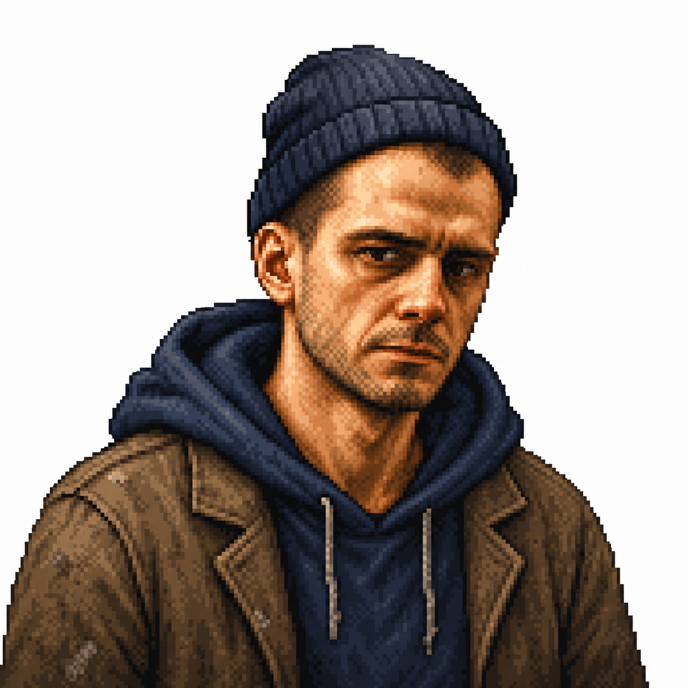
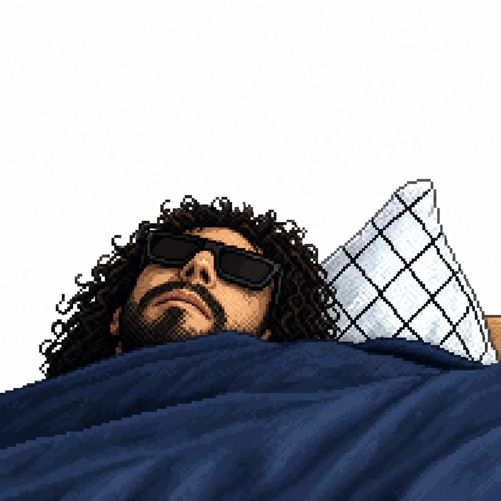
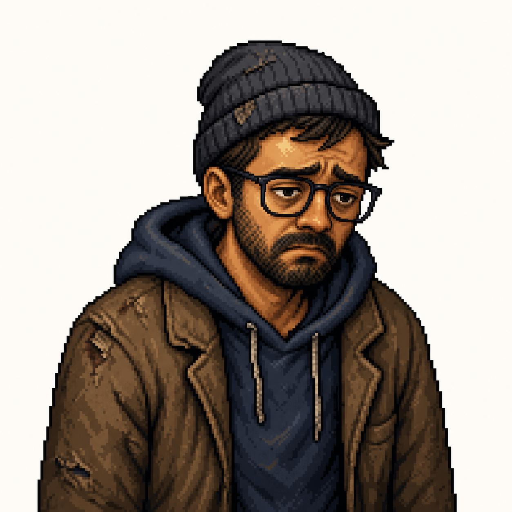
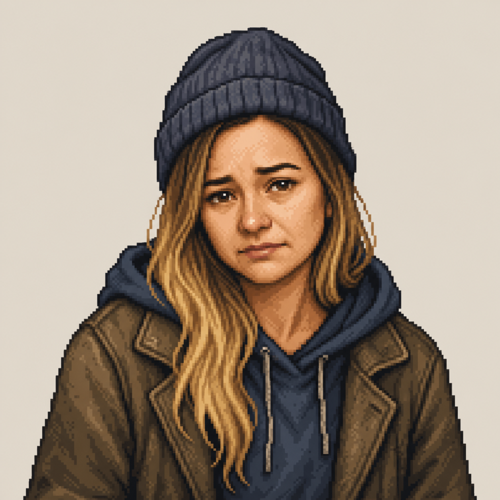

Seven fast days
About 60 seconds each. Eat before the timer ends or lose a heart. Last until day 7 — Agentur für Arbeit finally pays.
← → or click · Space
A Berlin survival comedy
Collect bottles to survive.
Whoever you are — they’re gonna take your job.
This transformation: everyone can lose their job.
How you play
One clear loop. Win and lose for real — jokes are free, hearts are not.
About 60 seconds each. Eat before the timer ends or lose a heart. Last until day 7 — Agentur für Arbeit finally pays.
Dig for Pfand bottles… or burn your hand. Outcome stays hidden until you commit. Slot-machine energy, Berlin edition.
Queue at REWE for Pfand cash, then buy food at the Döner stand. Waits cost precious seconds while the day clock keeps ticking.
Miss a meal: −1 heart. Bin burn: −½ heart. Hit zero and the run is over. Survive with health left — you win.
Gameplay
How we built it
Spec first, code second — so four people (and a few agents) could actually run in parallel.
Used skills
Superpowers plugin — plus the usual agent chaos, now with a paper trail.
Our AI co-pilot
From a messy idea to a playable Berlin survival loop — one shared workflow for thinking, building, and checking the work.
Turned brainstorm transcripts into product docs, technical specs, milestones, and parallel workstreams before coding began.
Challenged the premise, narrowed the core loop, explored Berlin jokes, and cut ideas that would not fit the hackathon.
Implemented Phaser mechanics, movement, HUD, economy, and polish across coordinated tasks while keeping shared invariants intact.
Generated and iterated pixel-art portraits, game visuals, and GIF-ready animation assets that match the hobo.berlin style.
Interrogated plans and specs for missing decisions, vague rules, hidden assumptions, and risks before they became code.
Used tests, browser flows, and final checks to prove each feature worked before calling it done.
The humans still employed

Denys
Software Engineer

Antwan
Software Engineer

Nishant
Software Engineer

Marina
Software Engineer